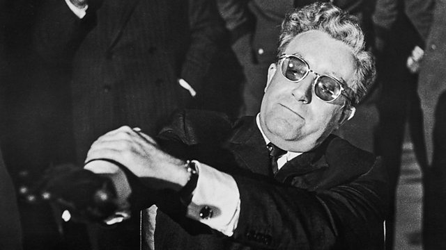
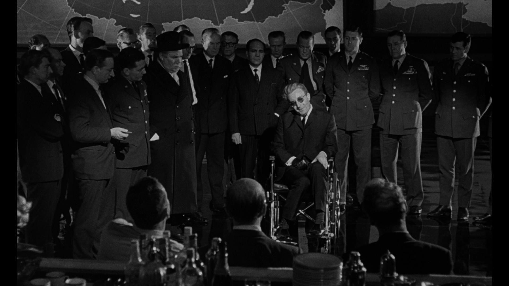

Welcome to the comedy page, enjoy from the movies
The weekly movie:Dr Strangelove: Or, How I Learned To Stop Worrying And Love The Bomb
skip the plot and go watch the trailerThe plot:
United States Air Force Brigadier General Jack D. Ripper is commander of Burpelson Air Force Base, which houses the 843rd Bomb Wing, flying B-52 bombers armed with hydrogen bombs. The planes are on airborne alert two hours from their targets inside the USSR. General Ripper orders his executive officer, Group Captain Lionel Mandrake (an exchange officer from the Royal Air Force), to put the base on alert, confiscate all privately owned radios from base personnel and issue "Wing Attack Plan R" to the patrolling bombers. All the aircraft commence attack flights on the USSR and set their radios to allow communications only through their CRM 114 discriminators, which are designed to accept only communications preceded by a secret three-letter code known only to General Ripper. Happening upon a radio that had been missed earlier and hearing normal civilian broadcasting, Mandrake realizes that no attack order has been issued by the Pentagon and tries to stop Ripper, who locks them both in his office. Ripper tells Mandrake that he believes the Soviets have been fluoridating American water supplies to pollute the "precious bodily fluids" of Americans. Mandrake realizes Ripper has become insane. In the War Room at the Pentagon, General Buck Turgidson briefs President Merkin Muffley and other officers about how "Plan R" enables a senior officer to launch a retaliatory nuclear attack on the Soviets if all superiors have been killed in a first strike on the United States. It would take two days to try every CRM code combination to issue a recall order, so Muffley orders the U.S. Army to storm the base and arrest General Ripper. Turgidson, noting the slim odds of recalling the planes in time, then proposes that Muffley not only let the attack continue but send reinforcements. According to an unofficial study, this would result in "modest and acceptable civilian casualties" from the "badly damaged and uncoordinated" Soviet military that would remain after the initial attack. Muffley refuses this plan and instead brings Soviet ambassador Alexei de Sadeski into the War Room to telephone Soviet Premier Dimitri Kissov on the "hotline". Muffley warns the Premier of the impending attack and offers to reveal the targets, flight plans and defensive systems of the bombers so that the Soviets can protect themselves.
After a heated discussion with the Premier, the ambassador informs President Muffley that the Soviet Union created a doomsday machine as a nuclear deterrent; it consists of many buried bombs jacketed with "cobalt–thorium G", which are set to detonate automatically should any nuclear attack strike the country. The resulting nuclear fallout would then engulf the planet for 93 years, rendering the Earth's surface uninhabitable. The device cannot be deactivated, as it is programmed to explode if any such attempt is made. The President's wheelchair-using scientific advisor, former German Nazi Dr. Strangelove, points out that such a doomsday machine would only be an effective deterrent if everyone knew about it; Alexei replies that the Soviet Premier had planned to reveal its existence to the world the following week at the Party Congress. U.S. Army troops arrive at Burpelson and battle with the garrison. After General Ripper commits suicide, Mandrake identifies Ripper's CRM code from his desk blotter and relays it to the Pentagon. Using the code, Strategic Air Command successfully recalls all of the bombers except for one, commanded by Major T. J. "King" Kong, due to the radio equipment being damaged in a missile attack. The Soviets attempt to find it, but Kong has the bomber attack a closer target due to dwindling fuel. As the plane approaches the new target, a Soviet ICBM site, the crew is unable to open the damaged bomb bay doors. Kong enters the bay and repairs the electrical wiring while straddling an H-bomb, whereupon the doors open and the bomb is dropped. Kong joyfully hoots as he rides the falling bomb until it detonates over the target. Back in the War Room, Dr. Strangelove recommends that the President gather several hundred thousand people to live in deep underground mines where the radiation will not penetrate. He suggests a 10:1 female-to-male ratio for a breeding program to repopulate the Earth once the radiation has subsided, a plan which gathers enthusiastic support from the all-male command staff. Worried that the Soviets will do the same, Turgidson warns about a "mineshaft gap" while Alexei secretly photographs the War Room. Dr. Strangelove declares he has a plan, then suddenly rises from his wheelchair and exclaims, "Mein Führer, I can walk!" The film cuts to a montage of nuclear explosions, accompanied by Vera Lynn's rendition of the song "We'll Meet Again".
The trailer for the movie "Dr Strangelove: Or, How I Learned To Stop Worrying And Love The Bomb":
back to home page